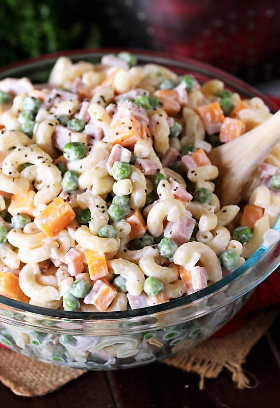

Ham and Cheese pasta salad

Description
Looking for a super simple, super tasty macaroni salad? Give Ham & Cheese Macaroni Salad a try ! Made with just a few basic ingredients, this simple macaroni salad is easy to pull together and loaded with flavor, too. Not to mention, it's a great dish for enjoying that leftover ham
ingredients
- 2 c. uncooked elbow macaroni
- 2. T. white vinegar
- 2 c. chopped cooked ham
- 1 (12 oz.) package frozen peas, thawed
- 1 (8 oz.) block mild or medium cheddar cheese, cut in small pieces
Steps
- Boil the macroni until it tender to bite
- Drain the macroni
- Combine the add in to the drained macroni
- Mix all together, add the cheese and stir.
- keep the salad chill.